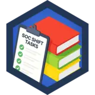

Ten years as a U.S. Navy Hospital Corpsman taught me to triage under pressure, document everything, and escalate at the right moment. Now I do the same thing with alerts. Cybersecurity graduate (BAT, Collin College, 2026) with hands-on work in Microsoft Sentinel, KQL, phishing analysis, and threat hunting.
EDUCATIONB.A.T. CybersecurityCollin College · May 2026
SERVICEU.S. Navy HM2 (E-5)2009–2018 · Honorable
CLEARANCEFormer SecretHeld during military service
IN PROGRESSCompTIA Security+SY0-701 · studying now
01 / case files
Work I can walk you through
Each project below is documented on GitHub or in my resume. I'm happy to screen-share any of them in an interview.
CASE-001personal lab2024
Azure SOC & Honeynet with Microsoft Sentinel
I built a honeynet in Microsoft Azure: three internet-exposed VMs (two Windows, one Linux) sending Windows Security Events and Linux Syslog to a Log Analytics workspace monitored by Sentinel. I watched real attackers hit it for 24 hours, hardened the environment, then measured again for 48 hours.
fig. 1 — lab architecture (my redraw)
Recorded counts · before vs. after hardening
Table
Before 24 h
After 48 h
SecurityIncident
195
0
SecurityAlert
10
0
Syslog (Linux)
7,381
11
Malicious flows
1
0
SecurityEvent (Win)
19,661
28,452
Analyst note: The windows were different lengths, so raw counts aren't a rate comparison. Windows events rose because they log all activity, not just malicious activity. Zero alerts and incidents after hardening is consistent with reduced exposure. I don't claim it proves cause.
A browser-based training module with three simulated phishing emails: a fake login alert, an executive gift-card request, and an IT password reset. Learners click the suspicious parts and get instant feedback on why each one is a red flag.
Investigated a simulated attack chain: spear-phishing, SMB exploitation, password spraying, lateral movement, and HTTPS exfiltration. Correlated Windows authentication events, mapped behavior to MITRE ATT&CK, ranked containment actions, and wrote an escalation-ready summary.
NIST SP 800-61
MITRE ATT&CK
Evidence preservation
CASE-004academic capstone2026
Threat Hunting Capstone
Hunted for credential abuse, insider activity, lateral movement, and ransomware across a simulated hybrid-cloud environment, then turned the findings into detection-improvement recommendations, including responsible-AI guardrails for false positives and analyst oversight.
Hypothesis hunting
Detection engineering
AI governance
CASE-005academic project2026
Machine-Learning Phishing Detection
Built and evaluated a Python Random Forest classifier on the UCI Phishing Websites dataset using a stratified 80/20 split. Reviewed accuracy, classification metrics, and the confusion matrix, and documented ethical and operational limits.
Python
scikit-learn
Model evaluation
02 / training log
Hands-on reps on TryHackMe
I use TryHackMe's blue-team labs and SOC Simulator to keep the triage muscle sharp between projects. The numbers below come from my public profile.
First Step into SOCEmerging threats & SOC response

SOC ApprenticeHow a SOC team operates
First Alert ClosedSOC Simulator
First Scenario CompletedSOC Simulator
100% True Positive RateSOC Simulator scenario
Defensive ToolsmithEssential SOC detection tools
Phish HunterPhishing Analysis room series
Bronze League1st place finish
38 completed rooms, grouped by SOC skill
SOC operations07
Junior Security Analyst Intro
SOC Role in Blue Team
SOC L1 Alert Triage
SOC L1 Alert Reporting
SOC Workbooks and Lookups
SOC Metrics and Objectives
Defensive Security Intro
SIEM, EDR & SOAR05
Introduction to SIEM
Splunk: The Basics
Elastic Stack: The Basics
Introduction to EDR
Introduction to SOAR
Phishing analysis07
Phishing Analysis Fundamentals
Phishing Emails in Action
Phishing Analysis Tools
Phishing Prevention
The Greenholt Phish
Snapped Phish-ing Line
Humans as Attack Vectors
Threat intel & frameworks09
Intro to Cyber Threat Intel
MITRE
Pyramid of Pain
Cyber Kill Chain
Unified Kill Chain
Diamond Model
Eviction
Summit
Systems as Attack Vectors
Network & recon06
Nmap
Passive Reconnaissance
L2 MAC Flooding & ARP Spoofing
Google Dorking
Introduction to Honeypots
Introductory Researching
Offensive fundamentals04
Offensive Security Intro
Pentesting Fundamentals
Intro to IoT Pentesting
Android Hacking 101
investigation notes
phishingattachment analysis
Malicious HTML attachment → redirect chain
Identified a disguised attachment by its actual file contents rather than its name, pulled the hidden redirect URL out of the markup, reduced it to the registrable domain for blocking, and hashed the archive for IOC sharing.
file · grep · curl · sha256sum
networkDNS anomaly triage
Possible DNS tunneling from a single host
Worked through subdomain cardinality, query timing, and label entropy to separate tunneling from normal lookups, attributed traffic to the responsible process, and planned containment, keeping TLD vs. registered domain straight throughout.
DNS logs · entropy · process attribution
ongoingstudy plan
Security+ SY0-701 + SOC reps
Six-week Security+ rotation that starts from my strengths (SIEM, log analysis, IR) and then targets security architecture. TryHackMe rooms run alongside it every week.
A SOC analyst sorts through noise, spots what's urgent, writes it down clearly, and hands it off at the right time. That's what a Navy corpsman does on a ship or in a clinic. Different patient, same discipline.
2019 – present
Warehouse Manager · Healthy Home 365
Investigate operational discrepancies, document findings, coordinate corrective action, and escalate safety or equipment risks to leadership.
2015 – 2018
CPR / First Responder Instructor · U.S. Navy
Delivered structured training, evaluated readiness, and kept accurate records across commands.
2012 – 2015
Medical Provider & Cyber Awareness Petty Officer · USS Green Bay (LPD-20)
Ran cybersecurity-awareness training for the medical department and kept the department at 100% training readiness on phishing, social engineering, passwords, and information handling.
2009 – 2012
Hospital Corpsman · U.S. Navy
Medical support in Corpus Christi and Afghanistan. Protected sensitive records under strict privacy rules and made sound calls under pressure.
05 / escalate to hiring
Hiring for your SOC? Let's talk.
Open to SOC Analyst L1, Junior SOC, Cyber Defense, and Incident Response roles in Dallas–Fort Worth or remote. Veteran-friendly and government/defense teams are a strong fit.